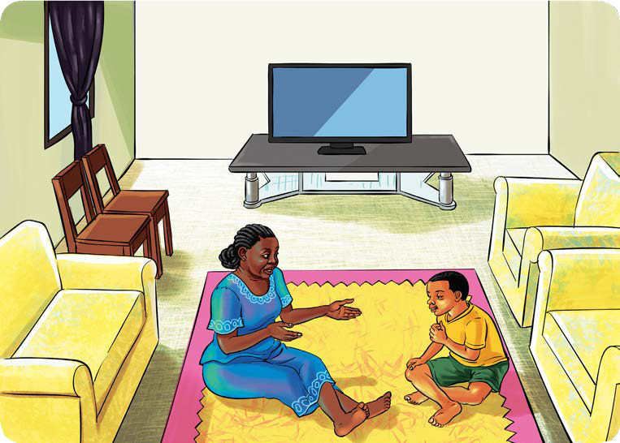

Soma habari ifuatayo, kisha jibu maswali yanayofuata.
Maisha ya Kanenge
Kanenge ni mwanafunzi wa Darasa la Tano katika Shule ya Msingi Ndondome. Alikuwa akiishi na shangazi yake tangu akiwa mdogo. Kila siku, alikuwa anajiuliza moyoni mwake lini atapelekwa kwa wazazi wake. Siku moja, alikaza moyo; akamuuliza shangazi yake, “Kwa nini ninaishi kwako badala ya kuishi kwa wazazi wangu?” Shangazi alimjibu, “Kanenge tulia, ipo siku utajua.” Kanenge hakuridhishwa na jibu hilo lakini alinyamaza.
Shangazi aliendelea kupika jikoni. Aliwaza sana kuhusu swali aliloulizwa na Kanenge. Moyoni mwake, alikuwa akijua ukweli kuwa Kanenge ni mtoto yatima. Wazazi wake walifariki kwa ugonjwa wa UKIMWI. Kanenge pia ni mwathirika wa ugonjwa huo. Shangazi aliendelea kutafakari njia nzuri ya kufikisha taarifa hiyo kwa Kanenge.
Siku hiyo jioni, Kanenge alionekana hana furaha. Shangazi yake alimuuliza, “Kwa nini leo unaonekana mnyonge?” Kanenge alijibu, “Ninaumwa mwili mzima, pia nahisi baridi kali sana.”

Shangazi aliona umuhimu wa kumuwahisha hospitali ya jirani. Alimgongea jirani yake mama wawili, na kumwomba amsindikize. Walimpakia katika gari na kumkimbiza hospitalini.
Walipofika hospitalini, waliingia katika chumba cha daktari. Kanenge alipewa nafasi ya kueleza matatizo ya afya yake. Kutokana na maelezo yake, daktari alipendekeza Kanenge afanyiwe vipimo vya maambukizi ya virusi vya UKIMWI. Hivyo, aliomba ridhaa kwa shangazi na kwa Kanenge mwenyewe. Wote walikubali. Kabla ya kuchukuliwa kipimo, daktari aliweka wazi kuhusu utaratibu wa kipimo hicho. Baada ya hapo, Kanenge alielekezwa chumba cha maabara. Akachukuliwa damu na haja ndogo.
Baadaye, waliitwa kwenda kuchukua majibu. Kabla ya kutoa majibu, daktari aliwakumbusha tena maelezo aliyowapatia kabla ya kuchukuliwa vipimo. Baada ya hapo, alisema, vipimo vimeonesha kuwa Kanenge ana maambukizi ya virusi vya UKIMWI. Kanenge alishituka aliposikia majibu hayo. Alilia kwa uchungu sana. Shangazi na daktari walimbembeleza kwa maneno yenye faraja. Baadaye, Kanenge aliacha kulia. Daktari alisema, “Kesho ni siku ya kliniki kwa ajili ya watu wanaoishi na virusi vya UKIMWI. Umlete akutane na watalaamu kwa ajili ya kupewa ushauri nasaha.”
Shangazi na Kanenge waliondoka kuelekea nyumbani. Walipofika nyumbani Kanenge alianza kulia tena. Alikuwa mtu mwenye mawazo mengi. Sura yake ilidhoofu na alikuwa na dalili zote za mtu aliyekata tamaa ya maisha. Shangazi